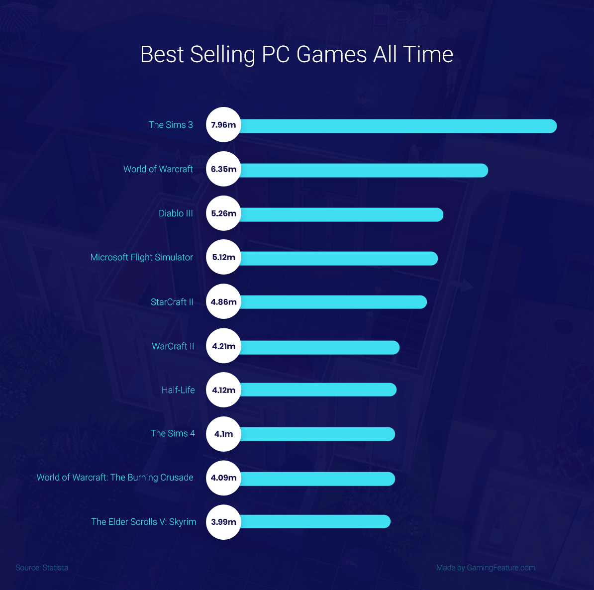

A videójáték olyan elektronikus játék, amely a felhasználói felülettel való folyamatos kölcsönhatást foglal magában, valósidejű vizuális visszajelzést hoz létre a két- vagy háromdimenziós megjelenítő eszközön (pl. tévéképernyőn vagy számítógépes monitoron), valamint további érzékszerveinkre is hat. Az 1980-as évek óta a videójátékok a szórakoztatóipar egyre fontosabb részévé váltak, és akár tekinthetők a művészetek egyik formájának is.
Népszerű játékok
Készítette: Józsa Gergely, mellékoldalak: Martonosi Péter, Papp Rajmund, Nagy Géczi Zsombor